No.01 Observing others' OOTD 仔细观察他人的 OOTD, Beijing
No.02 Looking in the glass, then meeting the eyes of someone doing the same 照镜子，并和同样在照镜子的人对视, Guangzhou
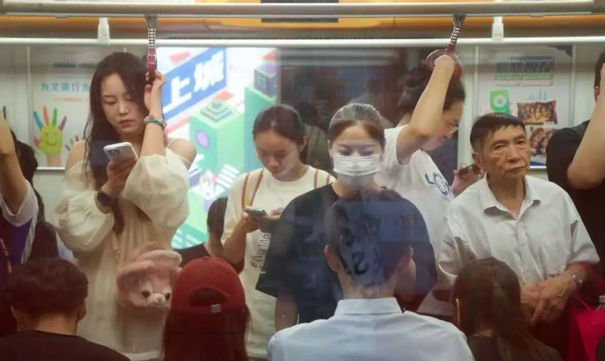
No.03 Looking for the train's date of birth 寻找列车的出生日期, Chengdu
No.04 Crying — including but not limited to: sniffling, sobbing, the kind with no sound left 哭泣，包括但不限于：抽泣、大哭、失声痛哭, Shenzhen
No.05 Laughing — including but not limited to: a smile, a hand over the mouth, a belly laugh, a single snort 笑，包括但不限于：微笑、捂嘴笑、捧腹大笑、嗤地一声笑, Shenzhen
No.06 Playing an instrument. 演奏乐器, Guangzhou
No.07 Reciting poetry, out loud 诗朗诵, Beijing
No.08 Getting in a fight, or breaking one up 打架，或拉架, Chongqing
No.09 Reading a paper book 读纸质书, Beijing
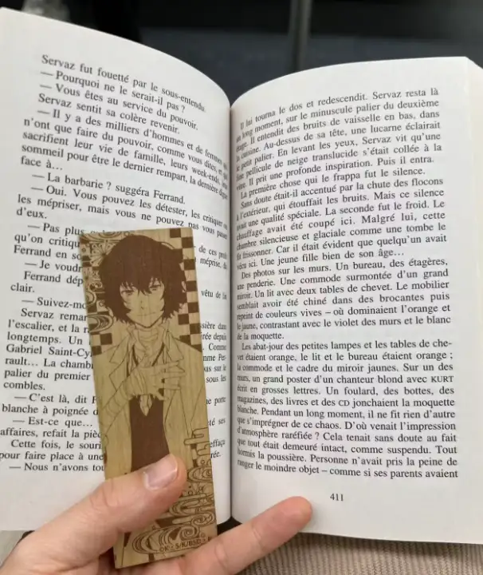
No.10 Self-criticising, or daydreaming 自我批判，或做梦, Xi'an
No.11 Studying the subway map 观察地铁路线图, Shanghai
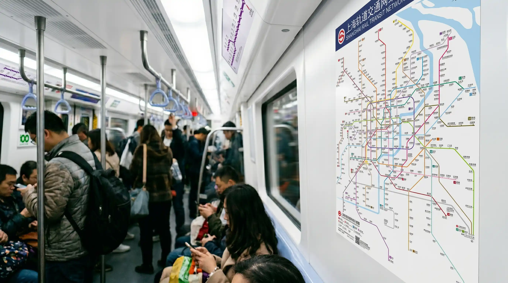
No.12 Listening to music 听歌, Guangzhou
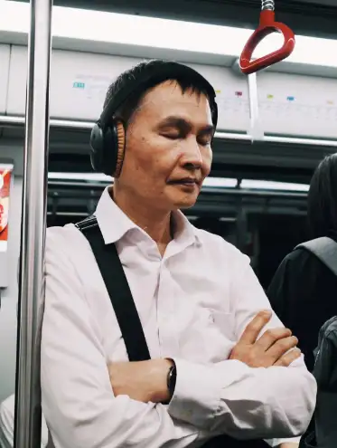
No.13 Pretending you're cool 假装自己很酷, Shanghai
No.14 Thinking about what to eat 思考吃什么, Beijing
No.15 Reading a novel 读小说, Shenzhen
No.16 Eavesdropping on a parent lecturing their kid 偷听家长教育小孩, Shenzhen
No.17 Turning your back on a screaming child, face full of disdain 背对吵闹的小孩露出嫌弃的表情, Chongqing
No.18 Playing a game, seriously 认真的打游戏, Xi'an
No.19 Reading the ads on the handrail 看扶手上的广告, Shanghai
No.20 Producing a folding stool, looking down on those sitting on the floor 掏出一个折叠小板凳，傲视那些坐在地上的人, Chongqing
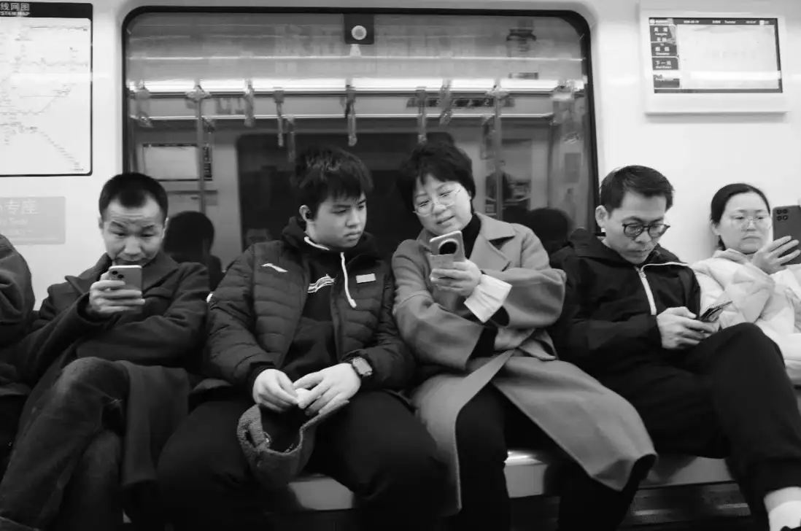
No.21 Listening to a podcast / audiobook / radio 听 podcast / 有声书 / 广播, Shenzhen
No.22 Watching the ads in the tunnel 看隧道里的广告, Chongqing
No.23 Watching the lightbox ads on the platform 看站台的灯箱广告, Nanjing
No.24 Breaking up (with someone)* 分手*, Shenzhen
No.25 Sizing up a good-looking guy, head to toe 上下打量帅哥, Hangzhou
No.26 crush crush, Xi'an
No.27 Chatting to the person next to you — what do you do, fancy a new job? 跟你旁边的人聊天，问他做什么的，要不要看新的工作, Chengdu
No.28 Staring into space 发呆, Guangzhou
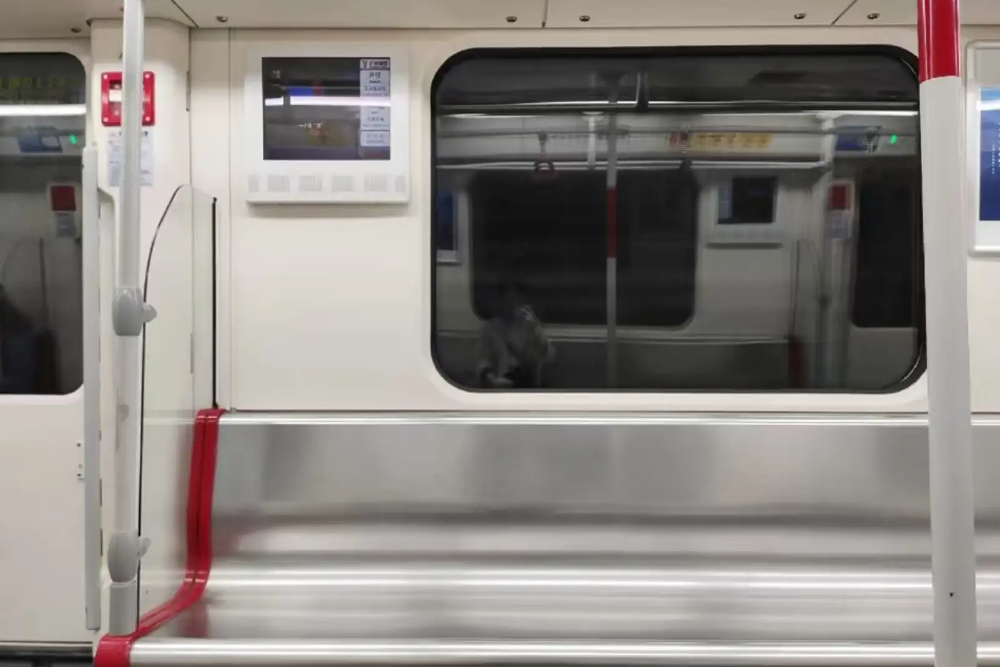
No.29 Sending emails 发邮件, Guangzhou
No.30 Taking a meeting 开会, Nanjing
No.31 Pulling out the laptop to rush a deck 掏出电脑赶 deck, Wuhan
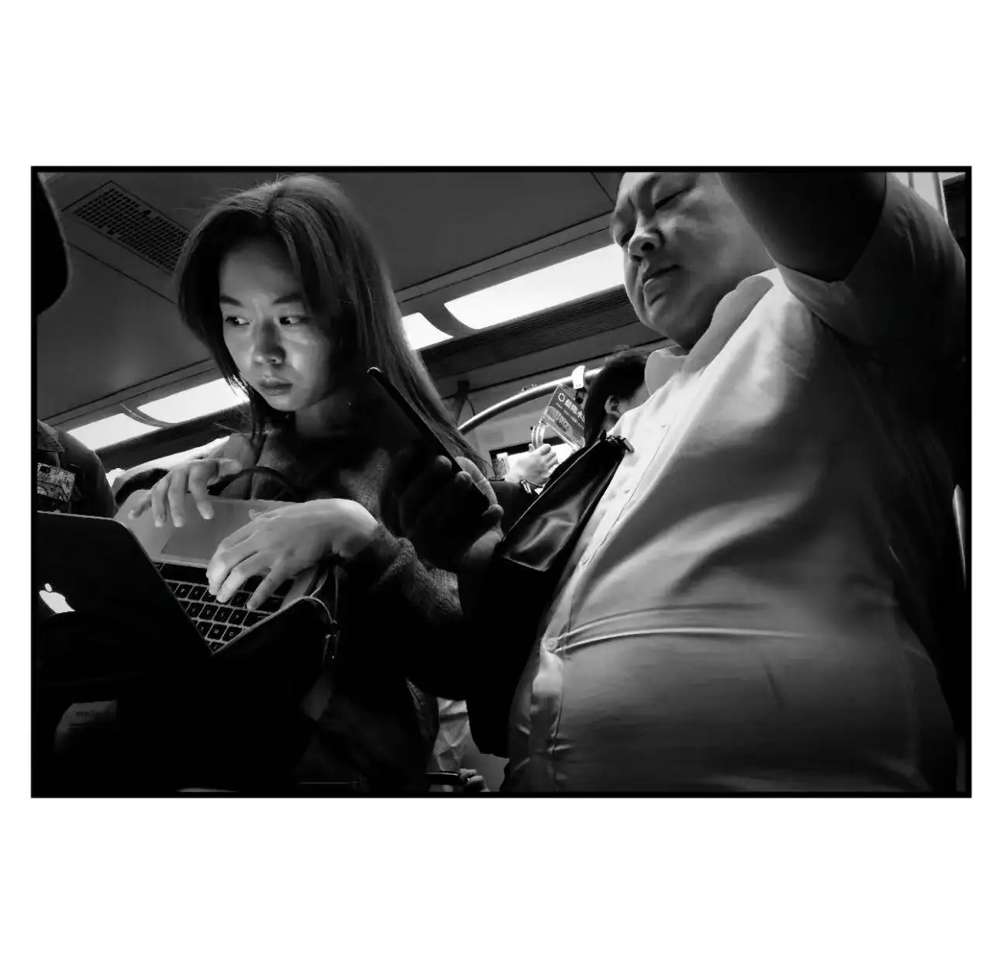
No.32 Hunting for food at your destination on Dianping 在大众点评找目的地食物, Chengdu
No.33 Opening Grindr / Rela 打开 Grindr / 热拉, Guangzhou
No.34 Muttering your way into the conversation next to you 自言自语的加入旁边乘客的谈话, Shenzhen
No.35 Watching the ads on the in-carriage TV channel 看车厢电视移动频道的广告, Wuhan
No.36 Watching the slow ones miss the train (:) ) 看走得慢的人来不及上车（:)）, Beijing
No.37 Listening for which side the doors open, then watching which side's lights blink 听报站是开左边还是右边门，然后看两边门哪边闪灯, Beijing
No.38 Cheering for the ones who miss the train?????? 给赶不上车的人喝彩？？？？？？, Nanjing
No.39 Looking at the transfer stations on the route map 看线路图上面的换乘站点, Beijing
No.40 Listening to the English place-names in the announcements 听报站的英文地名, Wuhan
No.41 Despising, with your eyes, the able-bodied in the priority seats 用目光鄙视那些坐老弱病残孕座位（但不是老弱病残孕）的人, Wuhan
No.42 Deliberately standing between a couple???? (savage)* 故意站在情侣中间？？？？（厉害死了）*, Xi'an
No.43 Looking for "Christine Bakery" station 寻找克里斯汀饼屋站, Shanghai
No.44 Standing in the gangway, hands off the rail, pretending to surf* 在车厢连接处不拉扶手假装冲浪*, Shanghai
No.45 Knit a sweater 打毛衣, Shanghai
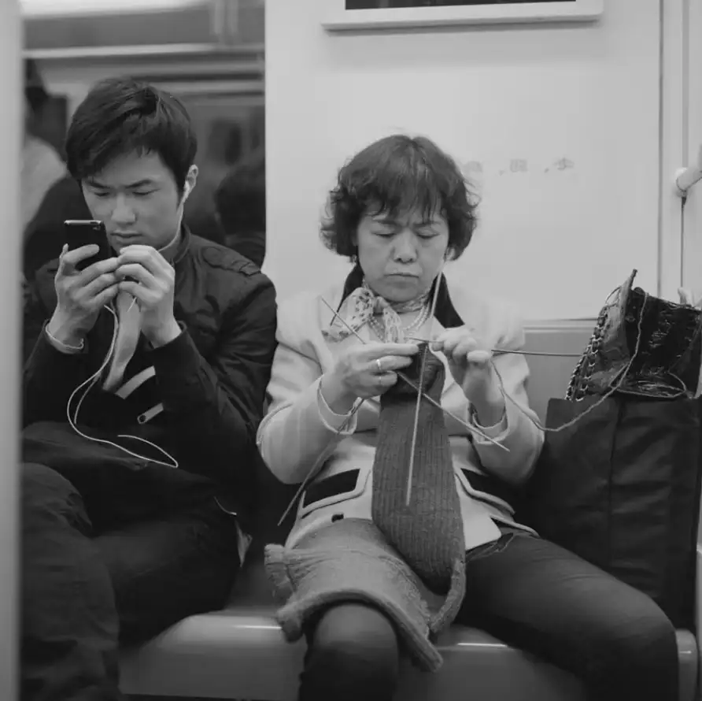
No.46 Leaning into the far corner, watching everyone 靠在最靠边的位置，观察别人, Chongqing
No.47 Draping your whole body over one pole so no one else can hold on 整个人扒在一根扶手上，让别人无处可抓, Guangdong
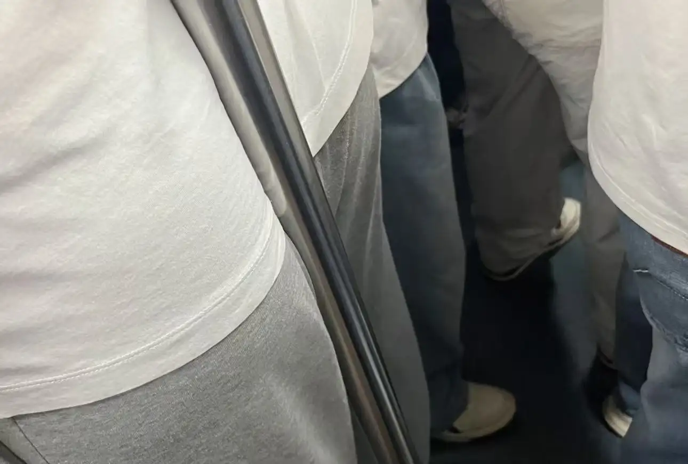
No.48 Failing to connect to the Huasheng Wi-Fi, and getting angry 连不上花生 WIFI 然后生气, Nanjing
No.49 Sneaking a look at which programmers are going bald 偷看哪些程序员秃顶了, Beijing
No.50 Peeking at someone else's phone screen (yeah yeah me too) (deleting the evidence) 偷看别人的手机屏幕（对对对我也会）（删除证据）, Chongqing
No.51 Opening the map to see how many minutes to each stop 打开地图看每站还要几分钟, Chengdu
No.52 Inventing some fresh excuses for being late 编一些新颖的迟到理由, Xi'an
No.53 Recalling a subway sci-fi story you once read, and getting scared 想着以前看过的地铁科幻故事然后感到害怕, Wuhan
No.54 Reading the "sweep away crime and evil" notice, then realising no one is sweeping anything 看地铁上的扫黑除恶提醒然后发现根本没人扫, Xi'an
No.55 Watching the people on the platform taking selfies with the train 看在站台对着地铁自拍的人, Shenzhen
No.56 Dashing off to the vending machine for a drink 冲下去到自动售货机买一瓶饮料, Beijing
No.57 Condemning, with your eyes, the person sitting between two empty seats 用目光谴责那些坐在两个空位中间的人, Sichuan
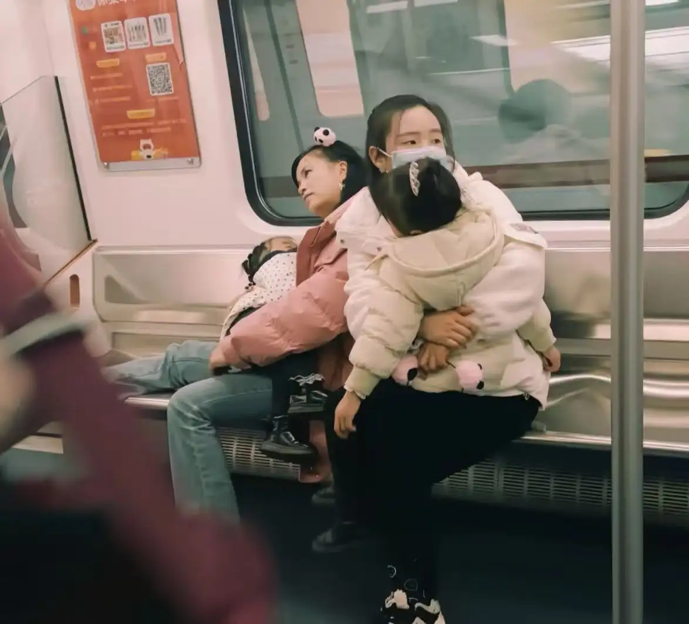
No.58 Condemning, with your eyes, the kid standing on the seat 用目光谴责踩椅子的小孩, Shenzhen
No.59 Condemning, with your eyes, the kid's parents 用目光谴责小孩的家长, Shanghai
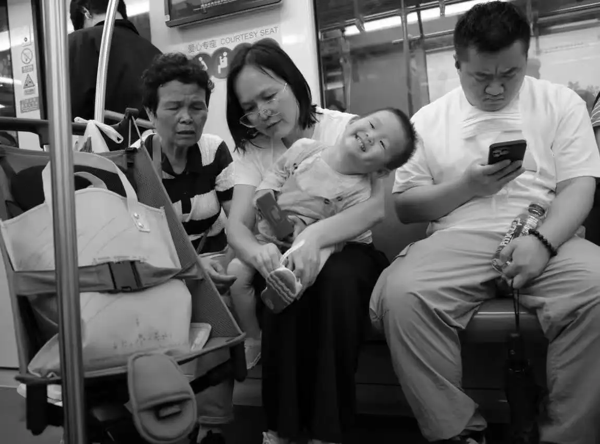
No.60 Condemning, with your eyes, the one whose wet umbrella keeps brushing everyone on a rainy day 用目光谴责下雨天把湿的伞蹭到别人身上的人, Beijing
No.61 Finding a beautiful same-sex stranger and fantasising about a whole life together 寻觅美丽同性幻想和 ta 过一生, Shenzhen
No.62 Regretting not taking a cab instead 后悔自己为什么没有坐车, Beijing
No.63 Regretting never learning to ride a bike 后悔自己不会骑自行车, Nanjing
No.64 Guessing the quiet, well-behaved-looking ones are wild behind closed doors 猜想看起来文静乖巧的人背地里玩很大, Chengdu
No.65 Catching your reflection in the door and realising you really have gained weight 对着车门发现自己真的胖了, Hangzhou
No.66 Wondering how long it's been since your last drink 思考自己有多久没有喝酒, Wuhan
No.67 Admiring yourself in the glass 欣赏玻璃里的自己, Guangzhou
No.68 Walking from the front car to the last on purpose (how long is this train, hahaha — either 6 cars or 8) 故意从车头走到车尾（我想知道地铁有多长哈哈哈哈哈，不是6节就是8节）, Wuhan
No.69 Eavesdropping on the lowly office worker taking a conference call 偷听打 concall 的卑微打工人, Wuhan
No.70 Watching the student couples 观察学生情侣, Shenzhen
No.71 Checking what brand of earphones people are wearing 观察戴耳机的人的耳机牌子, Chengdu
No.72 Counting how many people around you carry designer bags 数周围有多少人背了名牌包包, Beijing
No.73 Turning on AirPods audio sharing 打开 airpods 的共享音频, Xi'an
No.74 Planning what to wear to the club next time 想下一次去夜店要穿什么, Guangzhou
No.75 Watching a couple argue 看情侣吵架, Chongqing
No.76 For a man in sweatpants, wondering if he's wearing underwear (requires multiple angles and positions) 对于穿了运动裤的男人想他有没有穿内裤（需要多角度多动作观察）, Shenzhen
No.77 Looking out the window 看窗外, Guangzhou
No.78 Checking whether the stylish ones are wearing your company's client brands 观察看起来很潮的人有没有穿公司客户的衣服, Hangzhou
No.79 Observing whether the phone-hunched have a rounded back or a reverse neck curve 观察低头玩手机的人是驼背还是颈椎反弓, Chongqing
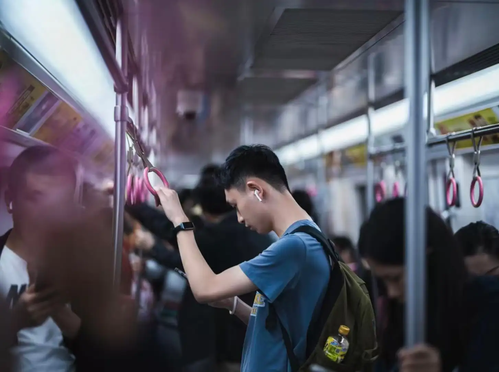
No.80 Finding someone next to you to talk nonsense with 找身边的人一起 BS, Chengdu
No.81 Deliberately connecting to someone's AirPods and playing an English listening exam 故意连上别人的 airpods 然后开始播放英语听力, Chongqing
No.82 Watching the billboards outside (especially the big screen at Zhongshan Park Cloud Nine — finally not Samsung) 看户外广告牌的广告（特别是中山公园龙之梦那个写字楼外墙大屏终于不是三星了）, Shenzhen
No.83 Watching the numb faces of the people 看人们麻木的脸, Shandong
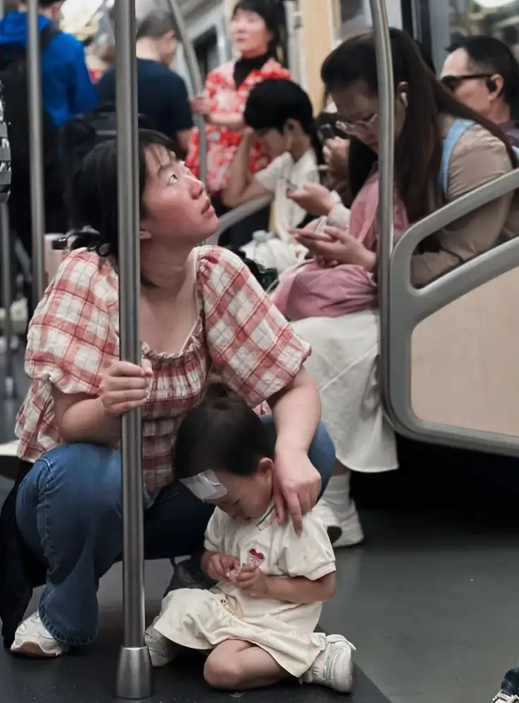
No.84 Silently reciting the Heart Sutra 默背《心经》, Shanghai
No.85 Wondering whether you or your boss will reach the office first today 思考今天自己先到办公室还是老板先到, Shenzhen
No.86 Wondering whether to open Tinder / Aloha / Rela / Grindr at the office today 思考今天在办公室要不要刷 Tinder / Aloha / 热拉 / Grindr, Shanghai
No.87 Counting your hairs 数发丝, Wuhan
No.88 Wondering if you'll get caught being late today 思考今天迟到会不会被老板抓到, Nanjing
No.89 Missing Greg Hsu 想念许光汉, Chengdu
No.90 Kissing 接吻, Shanghai
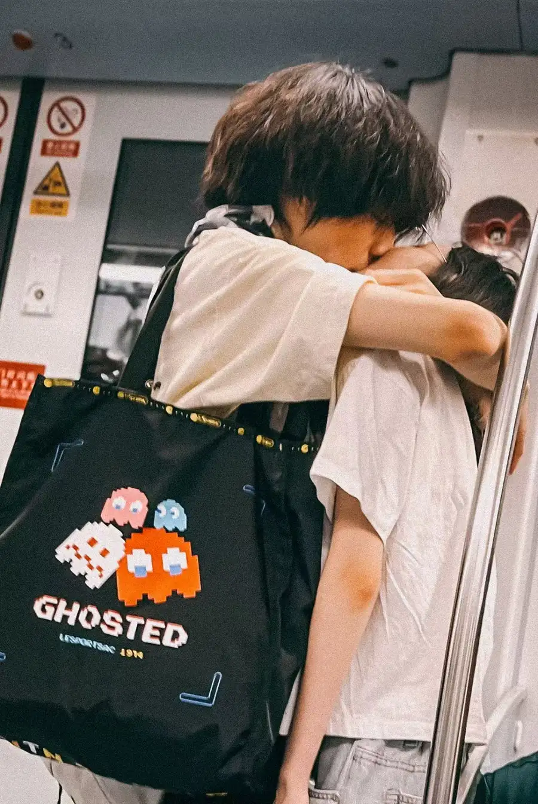
No.91 Napping 打盹, Shenzhen
No.92 Filling in the "what to do on the subway" form 填写“地铁上可以做什么”表单, Xi'an
No.93 Sneaking a look at someone's wristband, wondering if it's a couple's one 偷看别人手上戴的手环思考是不是情侣的, Wuhan
No.94 Playing the good Samaritan, handing out sweets to strangers 假装好心人给别人送糖, Shenzhen
No.95 Belting out "Tomorrow Will Be Better" to a gloomy auntie 给抑郁大妈高歌一首《明天会更好》, Hangzhou
No.96 Puffing out your belly and stroking it as if pregnant, to see if you can con a free seat 鼓起肚子并且抚摸小腹假装怀孕，观察能不能骗到免费让座, Nanjing
No.97 Observing and recording outfits that don't add up: a Uniqlo-loungewear uncle in very long, very pointy white leather boots; a Converse-sporty girl in a flesh-red short puffer 观察并记录很有违和感的穿搭：优衣库居家大叔穿了一双白色超长超尖头皮靴；匡威运动风小姐姐穿了一件大红肉色短羽绒服, Hangzhou
No.98 Sitting on the subway floor to read 坐在地铁地板上读书, Sichuan
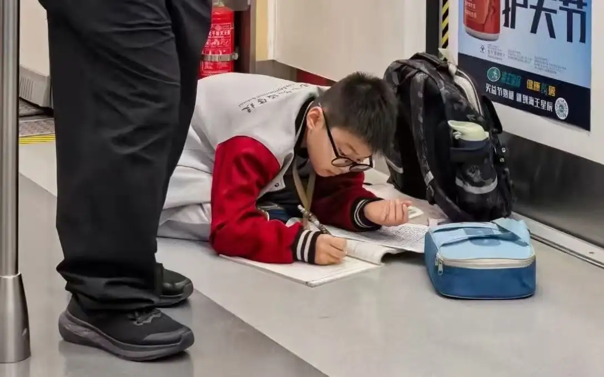
No.99 Handing out 100 copies of "100 Things to Do on the Subway" to the 100 passengers around you (no flyers on the subway!) 将100份《地铁上可以做的100件事》分发给周围的100名乘客（地铁里不可以分发传单！）, Chengdu
No.100 Reporting the person handing out "100 Things to Do on the Subway" on the subway. 举报地铁里分发《地铁上可以做的100件事》的人。, Guangzhou